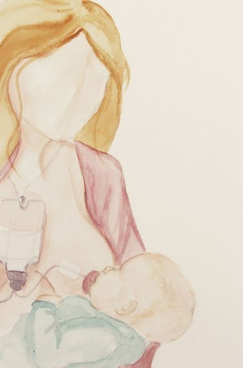

Что тебя беспокоит? ☁
Выбери подходящую ситуацию. Подсказки носят информационный характер и не заменяют диагностику.
Бережная помощь шаг за шагом
Что полезно знать при болезненности и уплотнении груди.
Кормление в привычном ритме
Если возможно, продолжай кормить ребёнка по его потребности. Не пытайся специально опорожнить грудь полностью.
Прохладный компресс
Используй прохладный компресс через ткань на 10–20 минут для облегчения боли и отёка.
Без сильного массажа
Интенсивное разминание может повреждать ткани и усиливать воспалительный отёк.
Отдых и питьё по жажде
Не нужно заставлять себя пить чрезмерно много воды. Попроси близких помочь с повседневными делами.
Обезболивание
Парацетамол и ибупрофен обычно совместимы с ГВ, но учитывай противопоказания и рекомендации врача.
Наблюдение за состоянием
При ухудшении состояния или отсутствии улучшения в течение 12–24 часов обратись к врачу.
⚕ Когда срочно нужна помощь?
Температура около 40 °C, сильный озноб, выраженная слабость или быстрое ухудшение самочувствия — повод срочно обратиться за медицинской помощью. Не ограничивайся народными методами.
Лактостаз и мастит
Что называют лактостазом?
Так часто называют болезненность, нагрубание и уплотнение груди на фоне затруднённого оттока молока. Современные представления также учитывают воспалительный отёк и сужение протоков.
Что такое мастит?
Мастит — воспаление ткани молочной железы. Оно бывает небактериальным или бактериальным. Диагноз и необходимость лечения определяет медицинский специалист.
Всегда ли нужно прекращать кормление?
Нет. Во многих случаях грудное вскармливание можно продолжать с учётом состояния женщины и рекомендаций врача.
Почему важно правильное прикладывание?
Комфортное и эффективное прикладывание помогает ребёнку получать молоко и снижает риск травмирования сосков. Если кормление болезненно, полезна консультация специалиста.
Грудное вскармливание — больше, чем питание ♡
Грудное молоко содержит питательные и защитные компоненты. Грудное вскармливание связано с преимуществами для здоровья малыша и матери.
Если кормление вызывает трудности, обращаться за помощью — нормально.

Защита малыша
Грудное молоко содержит антитела и другие защитные компоненты.
Питание
Состав грудного молока адаптирован к потребностям растущего ребёнка.
Здоровье мамы
ГВ связано со снижением риска некоторых заболеваний, включая рак молочной железы.
Близость
Кормление может быть временем общения и телесного контакта с малышом.
Как правильно приложить ребёнка к груди?
Пошаговая инструкция по организации комфортного кормления.
1. Устройтесь удобно
Поверни малыша животиком к себе. Его голова, шея и туловище должны находиться примерно на одной линии.
2. Носик напротив соска
Расположи ребёнка так, чтобы он мог слегка запрокинуть голову и широко открыть рот.
3. Дождись широко открытого рта
Можно слегка коснуться соском верхней губы ребёнка, дождаться широкого открывания рта и приблизить малыша к груди.
4. Подбородок касается груди
Ребёнок глубоко захватывает грудь, а не только сосок. Подбородок касается груди, нос остаётся свободным для дыхания.
5. Проверь ощущения
При эффективном кормлении заметно глотание. Постоянной выраженной боли быть не должно. Если она сохраняется, обратись к специалисту.
Миф или факт?
Проверь знания о лактостазе и безопасных методах помощи.
Народные методы против науки
Семь распространённых советов и их разбор с позиции доказательной медицины.
🥬 Капустные листья
Не являются доказанным лечениемМиф: капустные листья лечат лактостаз.
Капустные листья не устраняют воспалительный отёк и сужение молочных протоков. Убедительных доказательств их лечебной эффективности нет. Охлаждённый лист может временно облегчить дискомфорт за счёт охлаждения, но это не лечение причины.
Что делать вместо этого? Использовать прохладный компресс через ткань для уменьшения боли и отёка. При ухудшении состояния обратиться к врачу.
✋ Интенсивный массаж груди
Потенциально опасноСильное разминание может повреждать ткани, усиливать воспалительный отёк и болезненность.
Правильнее: избегать интенсивного давления на болезненный участок и не пытаться силой «разбить застой».
♨️ Горячие компрессы
Не рекомендуются как лечениеСильное нагревание может усиливать отёк, а слишком горячие компрессы способны вызвать ожоги.
Правильнее: для облегчения боли использовать прохладный компресс через ткань.
🍶 Спиртовые компрессы
Нет доказанной эффективностиСпиртовые компрессы не являются доказанным лечением лактационного воспаления или мастита. Они могут раздражать кожу.
Правильнее: использовать безопасные меры облегчения симптомов и при необходимости обратиться к врачу.
🍯 Мёд и домашние мази
Эффективность не доказанаНет качественных доказательств, что такие средства лечат лактостаз. Некоторые ингредиенты могут вызывать раздражение и аллергические реакции.
Правильнее: не наносить самодельные смеси на повреждённую кожу и не заменять ими медицинскую помощь.
💧 Сцеживание «до последней капли»
Может усугубить проблемуЧрезмерное сцеживание может усиливать стимуляцию выработки молока и поддерживать нагрубание и воспаление.
Правильнее: сохранять привычный ритм кормления, не пытаться полностью опорожнять грудь.
🚫 «Пусть муж отсосёт молоко»
Не является рекомендованным лечениемОтсасывание молока взрослым человеком не устраняет воспалительный отёк или сужение протоков. Интенсивное воздействие может дополнительно травмировать болезненные ткани.
Правильнее: если ребёнок может эффективно сосать грудь, продолжать кормление по его потребности. Если прикладывание невозможно, подходящий способ сцеживания подбирают по ситуации. Не следует заставлять ребёнка «рассасывать застой» силой.
Как поступить в этой ситуации?
Мамы рядом ♡
Истории, в которых можно узнать себя
Ты не обязана справляться со всеми трудностями одна. Иногда поддержка начинается с чужой истории.
«Я смогла продолжить кормление»
В 19 лет я впервые стала мамой. После родов столкнулась с сильной болью в груди и температурой почти 40 градусов.
Мне было очень трудно кормить малыша. Родственница посоветовала капустные листья, но заметного облегчения они не принесли.
Позже я научилась правильно прикладывать ребёнка к груди. Моё состояние улучшилось, а кормление стало комфортнее.
Несмотря на трудности, я смогла продолжить грудное вскармливание.
Анонимизированный рассказ со слов участницы. Точный диагноз по воспоминаниям установить нельзя.
Отзывы о сайте
Поделись впечатлением или ответь на сообщение. Пока это демонстрация: отзывы не публикуются для других посетителей.
Здесь удобно узнавать, какие народные советы не подтверждаются доказательной медициной.
Письмо для тебя ♡
Нажми на конвертик.
Научная основа проекта
📚 Клинические рекомендации
Минздрав России — официальный рубрикатор клинических рекомендаций ↗ Academy of Breastfeeding Medicine. Clinical Protocol № 36: The Mastitis Spectrum (2022) ↗ NHS — рекомендации по грудному вскармливанию ↗ ВОЗ — информация о грудном вскармливании ↗О проекте
«Лактостаз: народные рецепты против доказательной медицины»
Работу выполнила
Капелюш Софья Владимировна
Студентка 2-го курса Хабаровского государственного медицинского колледжа, специальность «Лечебное дело».
Научный руководитель